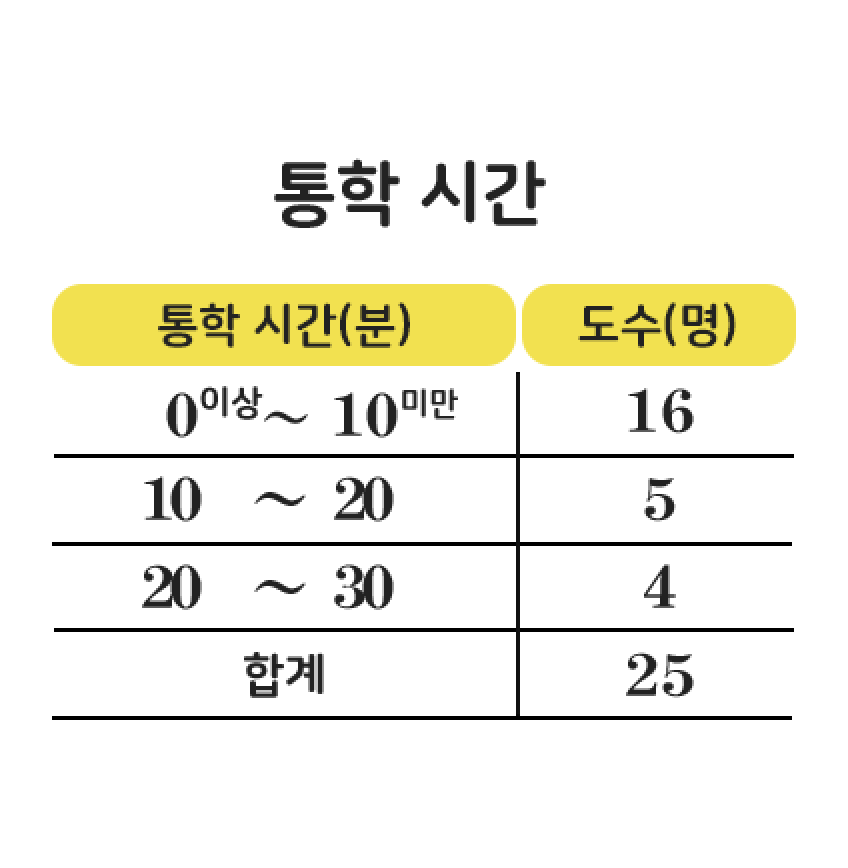

1/5
1
다음은 수연이네 반 학생들의 앉은키를 조사하여 나타낸 히스토그램이다.
수연이네 반 학생 수는?
수연이네 반 학생 수는?

오답

(수연이네 반 학생 수)=3+58+4=20(명)
정답

(수연이네 반 학생 수)=3+58+4=20(명)
2/5
2
다음은 규진이네 반 학생들의 오래 매달리기
기록을 조사하여 나타낸 히스토그램이다.
네 번째로 오래 매달린 학생이 속하는 계급은?
기록을 조사하여 나타낸 히스토그램이다.
네 번째로 오래 매달린 학생이 속하는 계급은?
![가로축이 매달린 시간, 세로축이 학생 수인 히스토그램이 있다. 영 초 이상 오 초 미만인 학생 수는 네 명, 오 초 이상 십 초 미만인 학생 수는 여덟 명, 십 초 이상 십오 초 미만인 학생 수는 열한 명, 십오 초 이상 이십 초 미만인 학생 수는 다섯 명, 이십 초 이상 이십오 초 미만인 학생 수는 세 명, 이십오 초 이상 삼십 초 미만인 학생 수는 한 명이다.]](./images/etc-ex-img02.png)
오답
오래 매달린 기록이 25초 이상인 학생 수는
1명,
20초 이상인 학생 수는
3+1=4명이므로 네 번째로 오래 매달린 학생이 속하는 계급은
20초 이상
25초 미만이다.
정답
오래 매달린 기록이 25초 이상인 학생 수는
1명,
20초 이상인 학생 수는
3+1=4명이므로 네 번째로 오래 매달린 학생이 속하는 계급은
20초 이상
25초 미만이다.
3/5
3
다음은 예은이네 반 학생들의 통학 시간을 조사하여 나타낸 히스토그램이다.
통학 시간이 30분 이상인 학생 수는?
통학 시간이 30분 이상인 학생 수는?

오답
(통화 시간이 30분 이상인 학생 수)
=6+3+2=11(명)
정답
(통화 시간이 30분 이상인 학생 수)
=6+3+2=11(명)
4/5
4
다음은 현주네 반 학생들의 수면 시간을 조사하여 나타낸 도수분포다각형이다.
수면 시간이10번째로 긴 학생이 속하는 계급은?
수면 시간이10번째로 긴 학생이 속하는 계급은?

오답
수면 시간이
9시간 이상인 학생 수는
3명,
8시간 이상인 학생 수는
4+3=7(명),
7시간 이상인 학생 수는
8+4+3=15(명)이므로 수면 시간이 번째로 긴 학생이 속하는 계급은
7시간 이상
8시간 미만이다.
정답
수면 시간이
9시간 이상인 학생 수는
3명,
8시간 이상인 학생 수는
4+3=7(명),
7시간 이상인 학생 수는
8+4+3=15(명)이므로 수면 시간이 번째로 긴 학생이 속하는 계급은
7시간 이상
8시간 미만이다.
5/5
5
다음은 어느 학급 학생들의 수학 성적을 조사하여 나타낸 도수분포다각형이다.
성적이 가장 좋은 학생의 수학 점수는?
성적이 가장 좋은 학생의 수학 점수는?

오답
도수분포다각형은 자료의 전체적인 분포 상태를 한눈에 알아볼 수 있지만, 성적이 가장 좋은 학생의 수학 점수는 알 수 없다.
정답
도수분포다각형은 자료의 전체적인 분포 상태를 한눈에 알아볼 수 있지만, 성적이 가장 좋은 학생의 수학 점수는 알 수 없다.